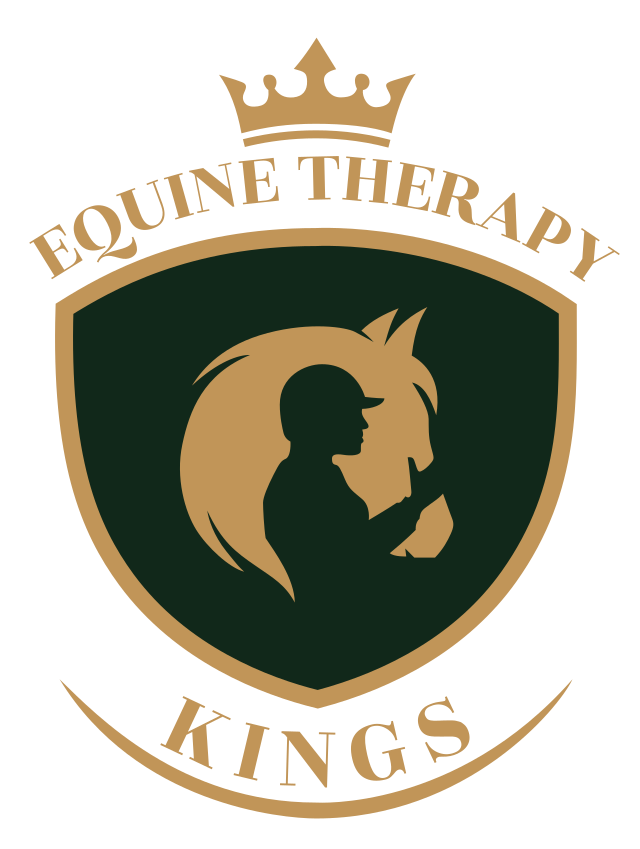
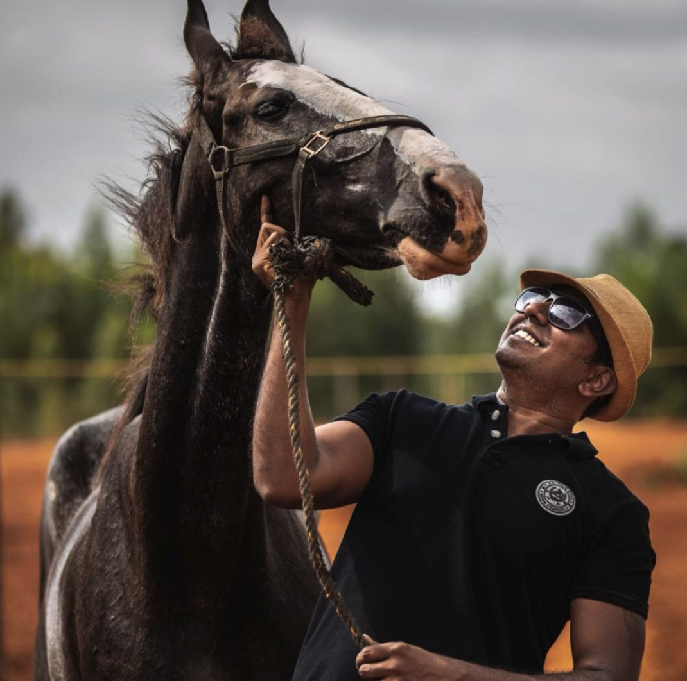

A calm, guided therapeutic environment where humans and horses connect to support emotional regulation, confidence, and wellbeing.
Equine-Assisted Therapy is a structured, evidence-informed approach where interactions with horses support emotional, psychological, and behavioural wellbeing.
Horses are highly sensitive to human emotions and body language. Under professional guidance, these interactions help participants develop awareness, trust, self-regulation, and confidence.

Carefully guided interactions with horses can support emotional, social, and behavioural development in a safe and respectful environment.
Building a sense of achievement, self-belief, and emotional assurance through positive interaction.
Encouraging clear expression, non-verbal awareness, and respectful connection with others.
Supporting calmness, emotional awareness, and the ability to manage responses safely.
Developing trust through consistent, gentle, and supervised interaction with horses.
Supporting a realistic and positive understanding of personal abilities and limitations.
Encouraging presence, attention, and awareness of surroundings and people.
Supporting cooperation, empathy, and respectful social interaction.
Fostering a sense of connection, grounding, and emotional engagement.
Supporting emotional regulation, sensory integration, confidence, and social interaction.
A grounding, non-judgemental environment that encourages calmness and emotional balance.
Carefully guided sessions that promote trust, presence, and emotional safety.
Structured programs for students requiring emotional or behavioural support.
Every individual follows a structured and thoughtfully guided journey, designed to ensure safety, clarity, and meaningful progress.
Understanding needs, background, goals, and suitability for equine-assisted work.
Ground-based activities with horses, conducted under professional supervision.
Observation, feedback, and adjustments based on individual response and progress.
A brief conversation can help clarify goals, suitability, and the best next steps — with no obligation.
Equine-assisted therapy includes different structured approaches, each guided by trained professionals and designed to support specific therapeutic goals.
Conducted alongside licensed mental-health professionals, EAP supports emotional processing, trauma awareness, and therapeutic development through guided interaction with horses.
A learning-focused approach that builds life skills such as communication, confidence, trust, emotional awareness, and personal responsibility.
A specialised clinical approach where trained occupational, physical, or speech therapists use the movement of the horse to support motor skills, balance, and coordination.
Equine-assisted therapy sessions are conducted within a structured, ethically guided framework, ensuring the wellbeing of participants while maintaining respect and care for the horses involved.
Programs are designed and guided in consultation with qualified mental-health and special-needs professionals, ensuring sessions remain goal-oriented, appropriate, and participant-centred.
Horses are carefully selected and handled by experienced equestrian professionals trained to support calm, predictable, and safe therapeutic interactions.
Sessions follow ethical guidelines that prioritise emotional and physical safety, informed consent, and the wellbeing of both participants and animals.
Speak with our team to understand whether equine-assisted therapy is suitable for you, your child, or your institution.
Every equine-assisted therapy session is designed with care, responsibility, and respect — ensuring a safe and supportive environment for both participants and horses.
Our approach prioritises emotional and physical safety while maintaining ethical responsibility toward animal welfare. Sessions are structured to support wellbeing, personal comfort, and dignity at every stage.
Equine-assisted therapy is offered as a complementary wellness approach and does not replace medical or psychological treatment.
These answers address common questions from parents, individuals, and institutions considering equine-assisted therapy.
A short conversation can help you understand whether equine-assisted therapy is suitable for you, your child, or your institution. There is no obligation.
Conversations are confidential and guided with care.
Kings Equestrian is located in a calm countryside setting, offering a peaceful and private environment suitable for therapeutic work, away from city congestion.
151 – 155, Kodiyalam Road